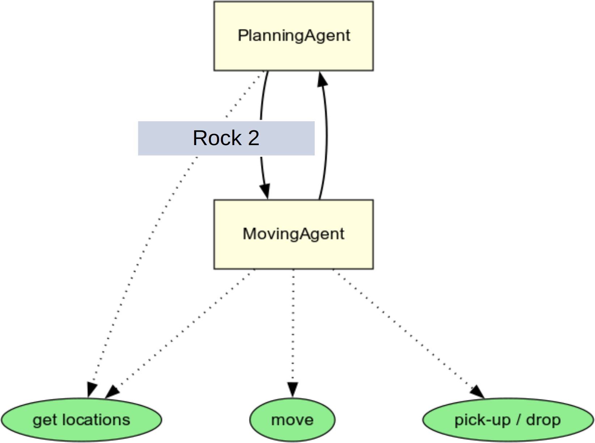
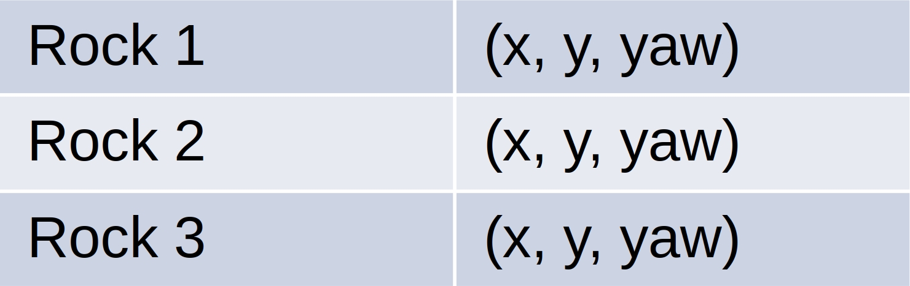
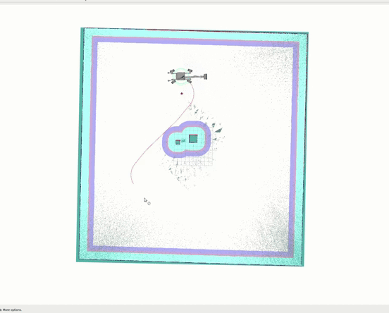
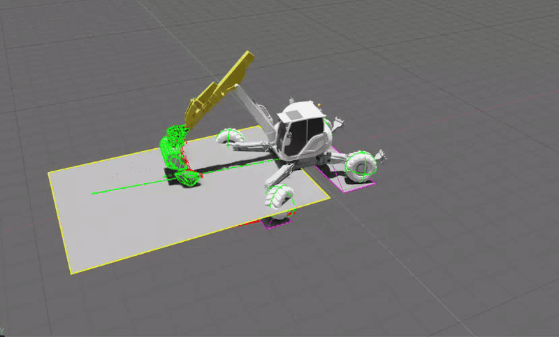

Project · ETH Robotic Systems Lab
Excavator VLM Planning Agent
VLM planning · Isaac Lab · ROS 2 action servers
This ETH Robotic Systems Lab semester project built a vision-language-model agent for autonomous high-level excavator planning in Isaac Lab. The task was to clear a rock field in simulation by producing useful high-level decisions rather than directly hand-coding the full behavior.
The VLM agent interpreted the scene and selected actions, while ROS 2 action servers connected those high-level decisions to low-level control policies. This kept the language-level planning layer separate from the execution layer and made the system easier to test.
Agent Structure




The agent loop is split into three pieces: extracting rock poses, selecting the next target with the planning agent, and delegating executable commands to the moving agent.